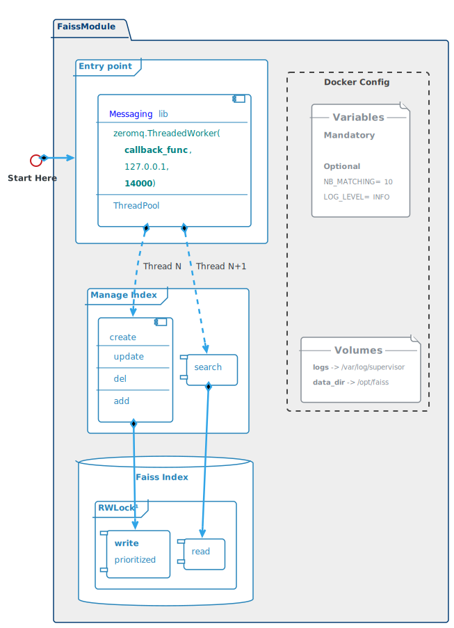

FAISS Module
Attributes
- Based on Facebook AI Similarity Search
- Heart of a fast search system
- Able to index litteraly billions of inputs
- Only handle matrices, of any shapes
- As simple as possible, to reduce risks.
- As generic as possible, to be reusable for any kind of inputs
Architecture Overview
Entry Point:
|
 |
Docker Configuration
ENVIRONMENT VARIABLES
- Mandatory
- None
- Optional
- NB_MATCHING: number of matching results to return
► High enougth to include the right wuestion, if it exists
► Low enougth to not overcharge sentence matching module
► default = _10_ - LOG_LEVEL: INFO
- NB_MATCHING: number of matching results to return
VOLUMES
- logs: mounted in /var/log/supervisor
- data_dir: mounted in /opt/faiss
Indexing procedure
As stated in Faiss FAQ only the add procedure is supported.
Thus the delete and update procedures boils down to simply re-creating a new index.
This imply that the list of vectors and the their associated id must be saved on disk.
Indexing requests come from Admin module.
A create request always comes alone.
delete, add and update requests may come in any combinations.
Creating a new Index
Deserialized create request example:
{"requests" : ["create"],
"create" : [
{"vector" : numpy.array , "id" : 1},
{"vector" : numpy.array , "id" : 2}
]
}
- Create a Flat index
- Add the list of vectors and their IDs to the index
- Save the index on disk in $data_dir (cf. docker configuration)
- Save the list of vectors and their IDs on disk in $data_dir
- use pickle protocol to save python dict with numpy arrays on disk
- check data_factory.prepare_data function in maestro for an example
Code snippet
import faiss
import numpy as np
with alock.gen_wlock():
xb = np.array(get_vector_list(request)) # create matrix
dim = xb.shape[1] # vector's dimension
tmp_index = faiss.IndexFlatL2(dim) # Flat index without ids
ids = get_ids(request)
index = faiss.IndexIDMap(tmp_index) # index with ids
index.add_with_ids(xb, ids) # add vectors and ids
Updating the Index
delete, add and update requests may come in any combinations.
To update an index:
- retrieve vectors and IDs from disk
- update as specified
- create a new index
- save new index and new data on disk
updating request example:
{ "requests" : ["add", "update", "delete"],
"add" : [{"vector" : numpy.array , "id" : 10}],
"update": [{"vector" : numpy.array , "id" : 11}],
"delete": [{"id": 1}, {"id": 2}]
}
Searching procedure
Indexing requests come from FindReply module.
Return a matrix of shape 2 X Nb_Questions X $NB_MATCHING
- shape 2 correspond to IDs and scores
- shape Nb_Questions correspond to the number of questions to search
- shape $NB_MATCHING correspond to the number of matchings to return
(defined in docker config)
search request example:
{ "requests" : ["search"],
"search" : [numpy.array , numpy.array]
}
Code snippet
#K=NB_MATCHING : Number of results returned by query (default = 10)
with alock.gen_rlock():
S, I = index.search(q_vectors, K) # S: scores, I: indexes
res = np.array([I, S]) # Transform S and I in a matrix
send(res)